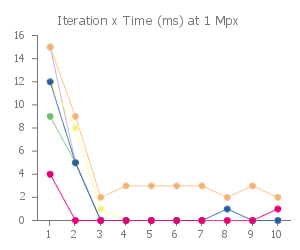

ImgLib2 Benchmarks
| ImgLib2 | |||||||||
|---|---|---|---|---|---|---|---|---|---|
| |||||||||
| |||||||||
| |||||||||
This page compares the time performance of image processing operations using raw byte arrays, ImageJ 1.x and ImgLib2. The benchmark tests these various methods for a "cheap" per-pixel operation (inverting an 8-bit image) as well as an "expensive" operation (some calls to java.util.Math) at several image resolutions.
Some of the charts plot results at several iterations, meaning the test was performed repeatedly in a loop. This is important because the just-in-time compiler (JIT) is able to optimize performance increasingly well as the same code is executed more than once. Hence, we show results after both a single iteration, as well as ten iterations.
Scenarios
The data below cover the following scenarios:
- Cheap operation on 1Mpx image (1000 x 1000), by iteration
- Expensive operation on 1Mpx image (1000 x 1000), by iteration
- Cheap operation on 25Mpx image (5000 x 5000), by iteration
- Expensive operation on 25Mpx image (5000 x 5000), by iteration
- Cheap operation on various image resolutions, 1st iteration (fresh JVM)
- Expensive operation on various image resolutions, 1st iteration (fresh JVM)
- Cheap operation on various image resolutions, 10th iteration
- Expensive operation on various image resolutions, 10th iteration
Hardware and software specifications
- ImgLib2 version 2.9.0
- ImageJ 1.x version 1.50i
- Mid 2015 MacBook Pro
- Mac OS X 10.11.4
- 2.5 GHz Intel Core i7 processor
- 16 GB 1600 MHz DDR3 RAM
- Oracle Java(TM) SE Runtime Environment (build 1.8.0_77-b03) with Java HotSpot(TM) 64-Bit Server VM (build 25.77-b03, mixed mode)
Analysis of time performance
For cheap operations, time performance is dominated by the overhead of looping itself, meaning several methods are significantly slower. However, this loop overhead is generally very small–and for several methods, such as ImgLib Array, the JIT quickly optimizes it down to raw performance. Hence, in the expensive case, performance converges across all methods.
Looking at trends as image resolution increases (the "various image resolutions" charts), most methods have less than 1/8th second overhead even for relatively large 25Mpx (5000 x 5000) images. And again, for non-trivial image processing operations, performance is extremely comparable. One oddity is that the JIT appears to optimize performance unevenly across image resolutions. However, the exact details of such discrepancies are not consistent across multiple executions of the benchmark code.
In conclusion, we believe there is little reason for concern regarding time performance of any of these libraries. And the advantages of ImgLib2's type- and container-agnostic algorithm development certainly outweigh any minor differences in time performance—especially since the flexible containers provide a mechanism for optimizing space performance based on the data type.
Source code
The main benchmark code can be found at:
The script that runs the benchmark at various image resolutions is:
The shell script also uses a Python script to transform the CSV output into the pChart data on this page:
Cheap operation results



Expensive operation results